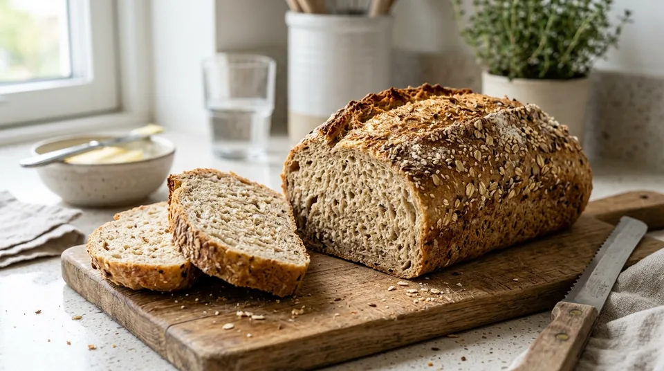

Выпечка · 30–35 минут
Творожно-овсяный ПП-хлеб
Ароматный цельнозерновой хлеб с хрустящей корочкой на овсяных отрубях и мягком твороге 0.1%. Доступно 2 выверенные вариации: классический плотный ржаной стиль и пышный пористый мякиш на псиллиуме.
К ингредиентам
Ингредиенты · 9 порций
- Мягкий творог «Савушкин» 0.1% — 250 г (2 пачки по 125 г)
- Яйца куриные С0 — 2 шт (~120 г) — подъем и объем
- Овсяные отруби — 100 г
- Кукурузный крахмал — 30 г (1.5 ст. л.)
- Псиллиум (шелуха подорожника) — 5 г (1 ч. л. с горкой) — поры мякиша
- Разрыхлитель теста — 1 ч. л. с горкой (5–6 г)
- Яблочный уксус (или лимонный сок) — 1 ч. л. (5 мл) — активатор газа
- Соль мелкая — 1 ч. л. без горки (5 г)
- Специи: кориандр / тмин / чеснок — по 1/3 ч. л. (по вкусу)
- Семена кунжута или льна (для верха) — 1/2 ч. л. (для посыпки)
Пищевая ценность
На 100 г: 170 ккал · Б 13.4 г · Ж 4.8 г · У 18.3 г
Шаг за шагом
Взбивание жидкой базы
В глубокой миске взбейте вилкой или венчиком 2 яйца С0 с 1 ч. л. соли до появления легкой пенки. Добавьте 250 г творога «Савушкин» 0.1% и 1 ч. л. яблочного уксуса. Тщательно перемешайте до гладкой кремовой массы.
Введение отрубей, псиллиума и крахмала
Всыпьте 100 г овсяных отрубей, 30 г кукурузного крахмала, 5 г псиллиума, 1 ч. л. с горкой разрыхлителя и хлебные специи (кориандр или тмин). Замесите лопаткой мягкое тесто.
Отдых и активация газов (5–7 минут)
Оставьте тесто при комнатной температуре на 5–7 минут. Псиллиум свяжет свободную сыворотку, а уксус активирует разрыхлитель — в тесте образуется губчатая микропористая структура.
Формовка и выпечка (165°C, 30–35 мин)
Выложите тесто в форму или сформируйте батончик на пергаменте, присыпьте семенами кунжута. За счет воздушных пор хлеб пропекается быстрее: выпекайте при 165°C в течение 30–35 минут. Шпажка из центра должна выходить сухой.
Остывание на решетке
Переложите буханку на решетку и дайте полностью остыть 25–30 минут перед нарезкой. Мякиш стабилизируется и станет пружинящим, мягким и не прессованным!
Другие варианты
Вариация 1: Классический плотный
- Мягкий творог «Савушкин» 0.1% — 250 г (2 пачки по 125 г)
- Овсяные отруби — 100 г
- Яйцо куриное С0 — 1 шт (~60 г)
- Кукурузный крахмал — 30 г (1.5 ст. л.)
- Соль мелкая — 1 ч. л. без горки (~5 г)
- Разрыхлитель теста — 1/2 ч. л. (~3 г)